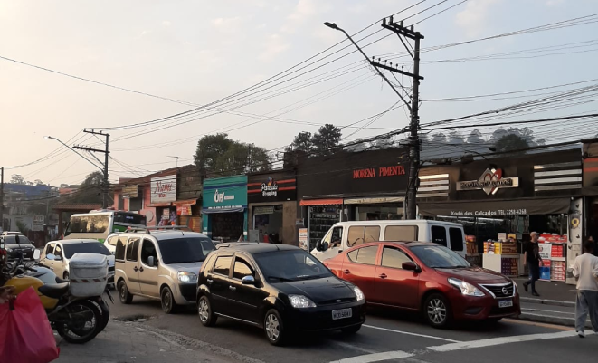
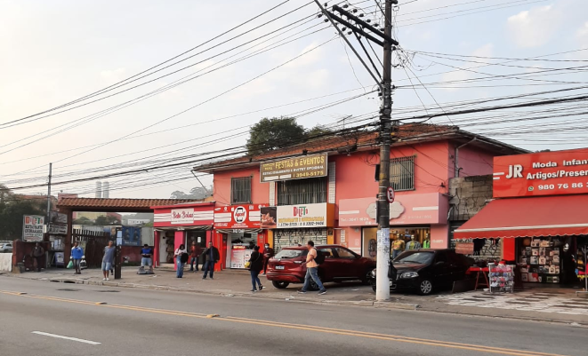
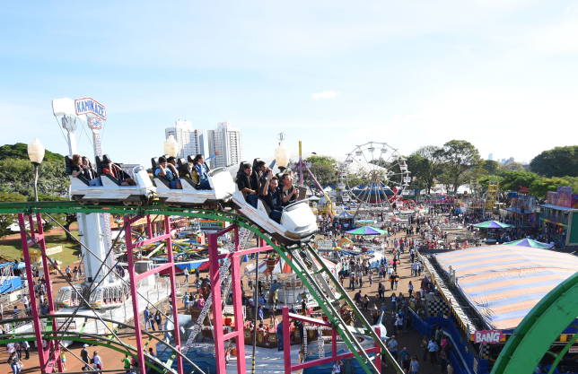

PARADA DE TAIPAS
PARADA DE TAIPAS
SOBRE O COMÉRCIO
A parada é formada por um imenso comércio. Antigamente, não existia essa grande quantidade de lojas, contudo, conforme foi crescendo a população, aumentou a variedade de mercadorias e de prestação de serviços.
 Em taipas o comércio é composto majoritariamente pela categoria de moda (roupas e calçados), apesar disso, são variados os tipos de lojas que existem no bairro, dado que tem lojas de tecnologia (acessórios para celulares, dispositivos, fones de ouvido etc.), perfumarias, lanchonetes, botecos, restaurantes, quiosques, farmácias, papelaria supermercados, lojas para pets, entre muitas outras.


AS LOJAS TÊM HISTÓRIA
Sendo assim, o bairro é caracterizado por um comércio misto e bastante movimentado nos finais de semana. Além disso, tem algumas lojas que são bastante antigas e estão atuando no bairro há mais de 40 anos, como a loja Araújo Doces e Festas e a Calçados Sérgio.
CANTAREIRA NORTE SHOPPING
Além dessas lojas do centro de taipas, outro establescimento que estimula o comércio é o Cantareira Norte Shopping. Desde de sua inauguração (abril/2016) tem feito bastante sucesso por ser um shopping próximo das residências.
O shopping conta com um cinema (cineflix), praça de alimentação, lojas de moda (Renner, Riachuelo, C&A, Pernambucas etc.), acessórios, materiais e todas esses tipos de serviços tradicionais de shopping. Também, no lado externo do shopping inaugurou um parque de diversões, com diversos tipos de brinquedos e diversão para todas as idades.
Confira um vídeo de um dos brinquedos do parque:
O Shopping Cantareira está presente no Instagram, conta com mais de 44 mil seguidores, e apresenta serviços, reformas e novidades de uma maneira interativa para quem os acompanha.
Também, o Shopping possui um site, o qual mostra sobre as lojas, cinema, lazer, serviços e sobre o próprio estabelescimento. Além de que, tem uma página de compras e de inscrição para atuar como lojista.
Confira todas essas informações no site, a seguir:
https://cantareiranorteshopping.com.br/